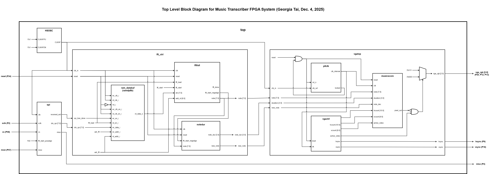
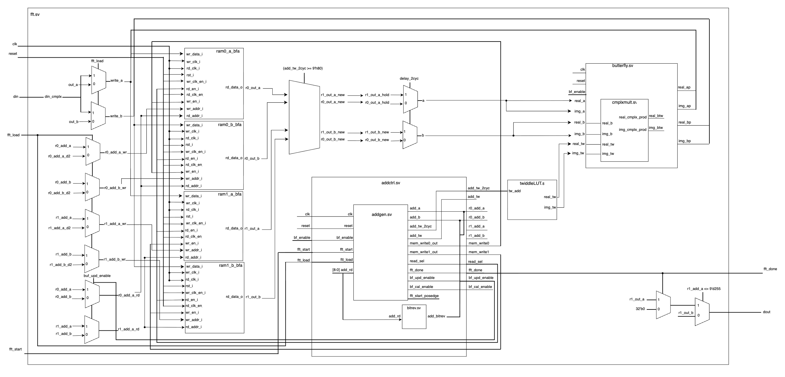
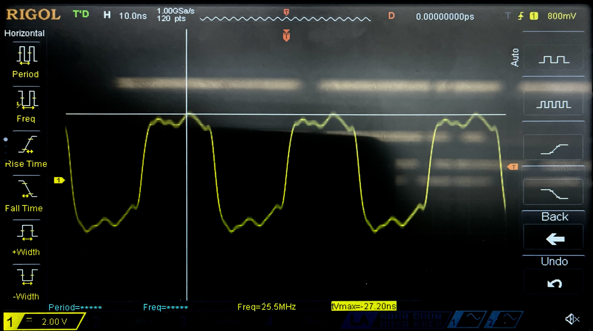
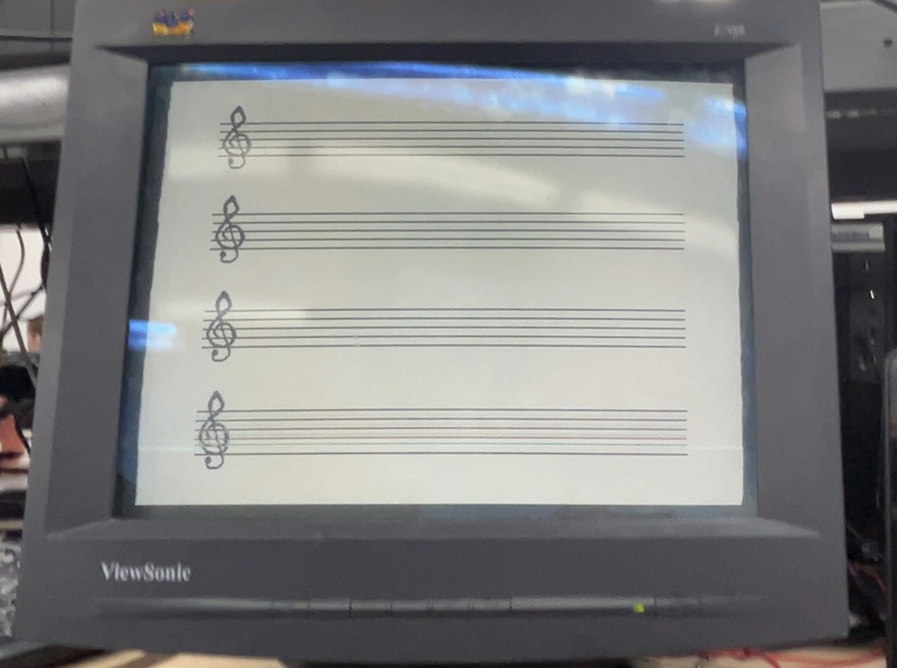
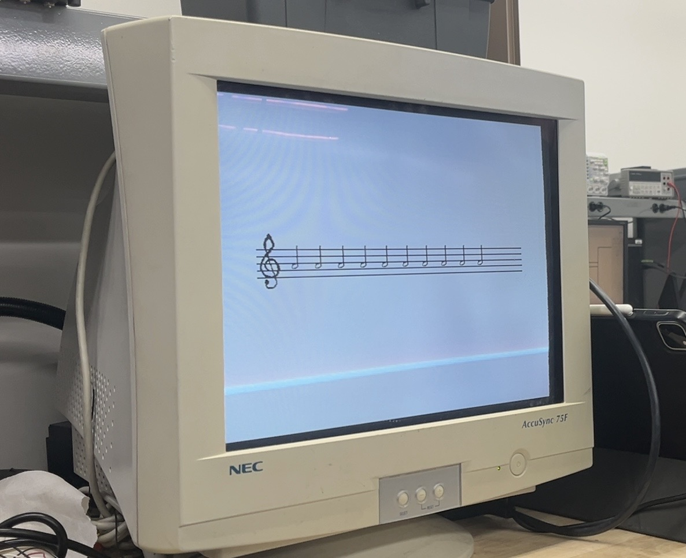

FPGA Design
Main FPGA Design
The FPGA was in charge of processing the inputs sampled my the MCU using a 512 point FFT to extract the dominant frequency of each sample as well as displaying the detected notes on a musical score through VGA. The frequency outputs of the FFT was used to decode the corresponding note and duration of each sound input. The note and duration was then passed into the VGA module, which has a pixel resolution of 1024 x 600 and a refresh rate of 60z.

Resource usage & New Hardware
The new hardware used was the VGA display. The top module of design would output a vsync and hsync to control the vertical and horizontal location of the beam and 3 - 1 bit color values for red, green, and blue.
The entire design uses 19 EBRs, 7 DSPs, and around 3800 LUTs. The entire design runs on a 12MHz clock, which is derived from the HSCOC. The PLL clock roughly doubles the clock to produce a frequency of 25.175MHz to control the VGA dispaly.
FFT Design
The Fast Fourier Transform transforms a signal from the time to frequency domain by recursively dividing a discrete fourier transform (DFT) into its odd and even indexed elements. The odd and even DFTs are of size N/2, where N is the size of its non-spit DFT. Using the symmetry and periodicity properties of complex exponentials, the even part corresponds to a half sized DFT and odd part corresponds to a half sized DFT that is multiplied by the twiddle factor (which is complex exponential expressed by \(W_N\)).
These equations below show the DFT and how the DFT can be split into its even and odd components.
DFT equation: \[ X[k] = \sum_{n=0}^{N-1} x[n] W_N^{kn} \] DFT equation split into even and odd components: \[ X[k] = \sum_{m=0}^{\frac{N}{2}-1} x[2m] W_N^{k(2m)} + \sum_{m=0}^{\frac{N}{2}-1} x[2m+1] W_N^{k(2m+1)} \] where \[ W_N = e^{-j \frac{2\pi}{N}} \]
Using Radix-2 decompositions, an N point FFT can be computed through:
- \(\log_2(N)\) levels of transforms
- Each transform has \(N/2\) butterfly operations
- A total of \(\frac{N}{2} \log_2(N)\) butterfly operations
We decided to use a 512 point FFT for higher resolution processing of our microphone inputs. Since N = 512, we would require:
- \(\log_2(512) = 9\) levels of transforms
- \(512/2 = 256\) butterfly operations
- total of \(\frac{512}{2} \log_2(512) = 2304\) butterfly operations
Since there was a limited amount of memory on our FPGA, we decided to use to calculate FFT on a 16 bit value, with 8 bit real and imaginary values.
The FFT design contains an address generation unit, and address control unit, a butterfly unit that houses a complex multiply unit, and 4 RAM blocks.
The design begins with loading 512 inputs into RAM0 (ram0_a and ram0_b), and asserts and fft_start signal once all inputs are loaded. The address generation unit then calculates the address of the input values and twiddle factors based on the fft level. The address generation unit calculates each butterfly address pair (a, b) through rotating the indicies, where i is the butterfly level and j is the address index, such that:
\[ a = Rotate_5(2j, i) \] \[ b = Rotate_5(2j + 1, i) \]
The address control unit that asserts commands to perform butterfly operations as well as memory read and write commands. The commands for writing and reading to RAM0 (ram0_a and ram0_b) and RAM1 (ram1_a and ram1_b) switch at every level. Since the system begins by loading the input data into RAM0, all the odd levels will read from RAM0 and write to RAM1 and all the even levels will read from RAM1 and write to RAM0. The proper a and b values are read from memory and input to the butterfly unit, and computes 8 bit real and imaginary values through the following equations
\[ A' = A + B(TW) \] \[B' = A - B(TW) \], where TW is the corresponding twiddle value.
The complex butterfly outputs are written back into memory and read the next level. The outputs for the final FFT level are located in RAM0 (ram0_a and ram0_b) and an fft_done flag is asserted once the butterfly values of final level are fully calculated. The outputs of the level are then processed to extract the maximum k value and corresponding dominant frequency of the sample.
The memory blocks we were using contains a 2 cycle read delay. Therefore, we had to implement a 2 cycle stall to before calculating the butterfly values. More of the detailed internal stalling and pipelining of the FFT design can be seen in our Github Repository..
FFT Block Diagram

VGA Design
The VGA design contains several facts that determine how the pixels are displayed on the monitor.
Front Porch: time between end of the visible line and start of horizontal sync pulse allows electron beam to move from end of line to start of next
Horizontal Sync Pulse: pulse that indicates line done scanning and sto start next
Back porch: time after horizontal sync pulse and before start of visible line allows electron beam to stabilize before drawing next line
Visible area: area where line is scanned
The VGA top module is split into the Phase-Locked Loop (PLL) which generates the proper clock speed for VGA, the VGA control modle, which generates the horizontal and vertical sync signals based on our pixel resolution, and a music score module which draws the score lines, treble clef, and notes.

The music score module displays the score in a fixed pixel location, so that calculations for the treble clef and note locations are dependent on the score location. The pixel layout for the treble cleff and music notes are stored in a memory file. The treble clef is 40x80 pixels and the notes are each 30x60 pixels. The note memories contain pixels layouts for eighth, quarter, half, and whole notes with and without sharps. The eighth, quarter, and half notes also contain pixel layouts for the stem up and stem down. To calculate the note location, the octave and semitone of each note is compared to the known location for B4 (third line on the score). The stem direction of each note is also calculated in comparison the B4, where notes above B4 will have a downwards stem and those lower on the lower half will have an upwards stem. Additionally, if the note location is calculated as above or below the score, a small ledger will also be included in the note display to properly format the note.
VGA Display

